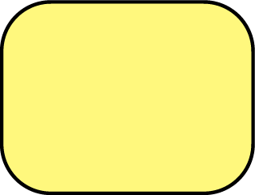
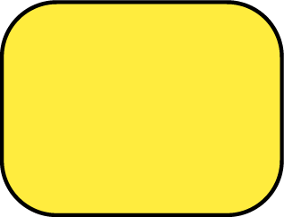
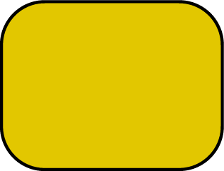
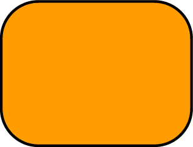
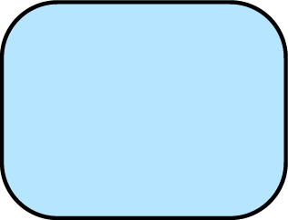

it's not the best way to get lighter color using white.

lemon juice in the summer

warm tone of yellow reminds me of sunset
when I got out of high school.
when I got out of high school.

summer

orange juice

summer sky